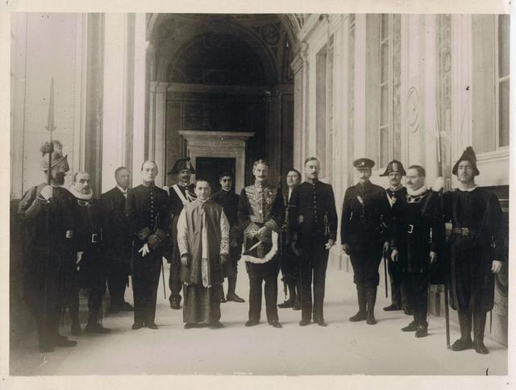

What is the difference between a duke, an earl, a lord, a marquis, a baron and a count?
“Do Men Ever Visit Boston?”
Duke > Marquis > Earl > Viscount > Baron.

Duke
The highest, most powerful rank. There are but a handful of dukes. William the Conqueror was a duke.
Marquis
Some counties are border counties. A border county is where the action is. Counts and Earls are equivalent ranks – wives of earls have always been called countesses.
What is a count? He is the ruler of a county.
So, eventually, border count became a rank above regular count. Thus: marquis.
Viscount
Is below count, the same as the vice president is below the president.
Baron
Is the bottom of the totem pole. But these are all barons, to hear some people tell it. When the king is at odds with his barons, and they’re making him sign the Magna Carta, you can bet that the dukes, marqueses, earls, counts, and viscounts are standing with the barons, not with the king.
But, to hear some tell it, a baron is anybody who holds directly from the king. So the dukes and such are literally barons. They just don’t call themselves that because they have more impressive titles.
Beware: things can switch up on you every time you cross into a new country or a new century.